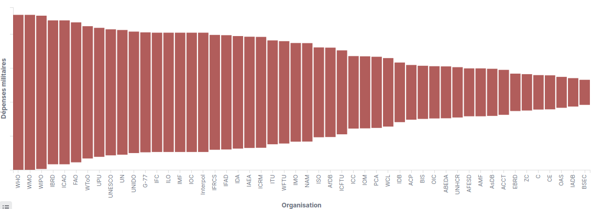
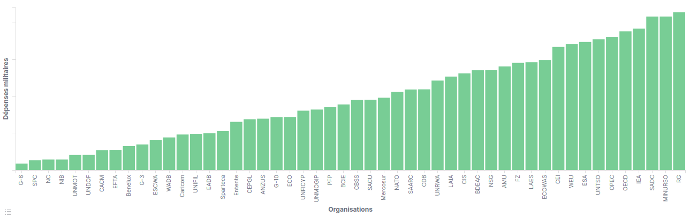
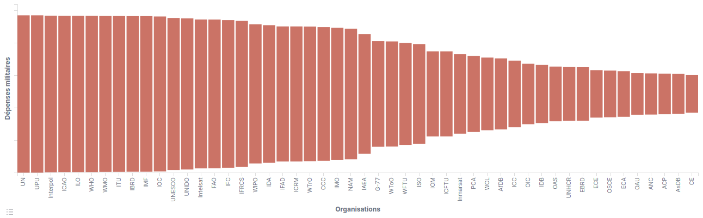
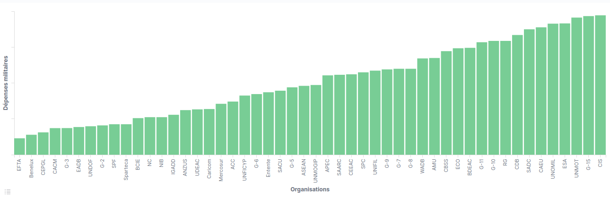
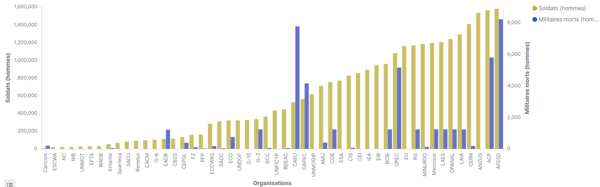
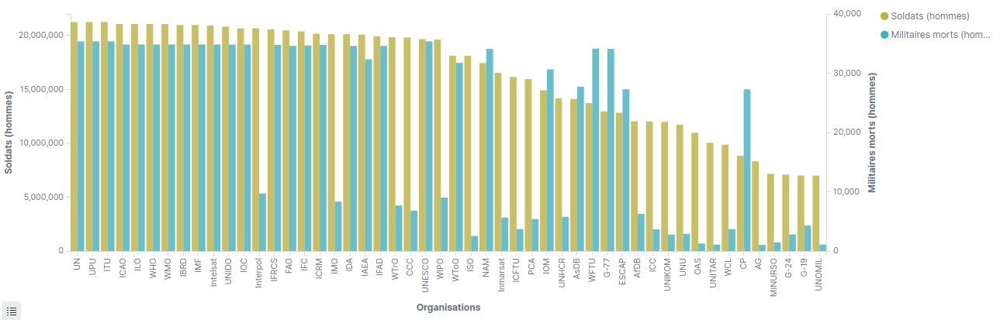
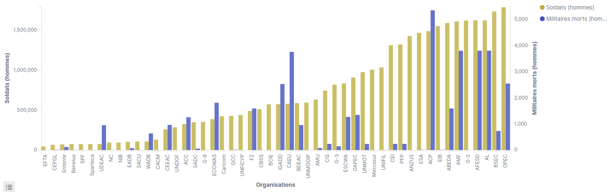

Cumul des dépenses militaires des pays membres de chaque organisation
En 2004

Les 50 organisations ayant les plus grosses dépenses militaires cumulées en 2004Pour chaque organisation, somme des dépenses militaires (en % de PIB) des pays membres(réalisé avec Kibana)

Les 50 organisations ayant les plus faibles dépenses militaires cumulées en 2004Pour chaque organisation, somme des dépenses militaires (en % de PIB) des pays membres(réalisé avec Kibana)
En 2018

Les 50 organisations ayant les plus grosses dépenses militaires cumulées en 2018Pour chaque organisation, somme des dépenses militaires (en % de PIB) des pays membres(réalisé avec Kibana)

Les 50 organisations ayant les plus faibles dépenses militaires cumulées en 2018Pour chaque organisation, somme des dépenses militaires (en % de PIB) des pays membres(réalisé avec Kibana)
Cumul des soldats des pays membres de chaque organisation, ainsi que des pertes militaires
En 2004
Les 50 organisations ayant le plus de soldats cumulés en 2004, associé au nombre de militaires tués par organisationPour chaque organisation, somme des soldats et des militaires tués des pays membres(réalisé avec Kibana)

Les 50 organisations ayant le moins de soldats cumulés en 2004, associé au nombre de militaires tués par organisationPour chaque organisation, somme des soldats et des militaires tués des pays membres(réalisé avec Kibana)
En 2018

Les 50 organisations ayant le plus de soldats cumulés en 2018, associé au nombre de militaires tués par organisationPour chaque organisation, somme des soldats et des militaires tués des pays membres(réalisé avec Kibana)

Les 50 organisations ayant le moins de soldats cumulés en 2018, associé au nombre de militaires tués par organisationPour chaque organisation, somme des soldats et des militaires tués des pays membres(réalisé avec Kibana)